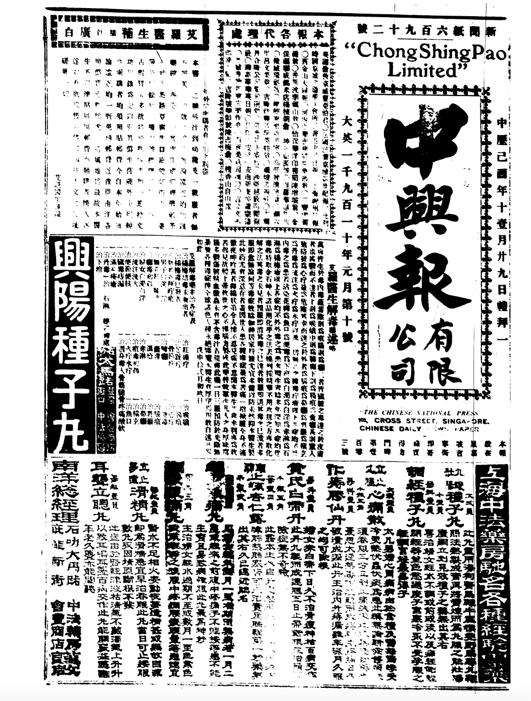
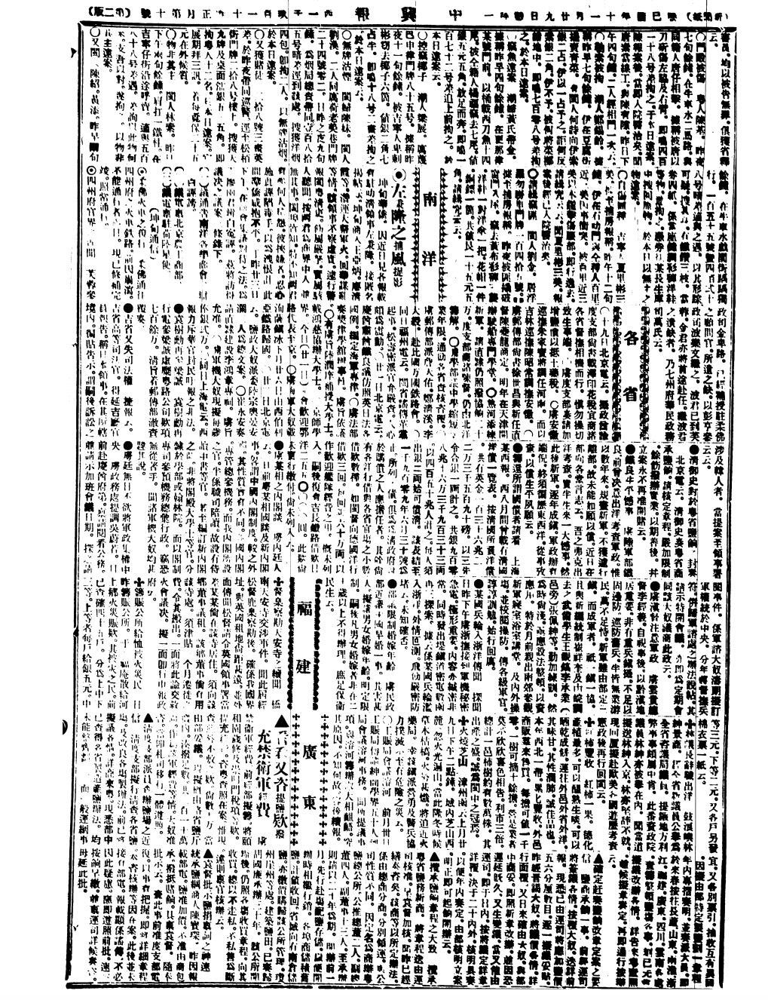

二十世纪初的中国，正处于内忧外患的至暗时刻。清廷腐朽，列强环伺，民族危亡之际，无数仁人志士前赴后继地投身革命洪流。而在远离故土的南洋，一群华侨却以血与火的方式，书写了属于他们的救国篇章。
从孙中山先生的革命之路，到黄花岗上二十七位南洋华侨的壮烈牺牲，这段被淡忘的历史值得被重新讲述。他们并非旁观者——他们是亲历者、组织者、资助者，更是以生命赴国的先驱。
孙中山先生为中国的革命付出了极大的心血，虽历经多次挫折，但依旧以顽强的革命毅力进行革命。在孙中山先生的革命道路中，南洋华侨逐渐成为他在海外的重要活动地点，对革命之路起到了极大的推动作用。
早在1902年孙中山抵达越南后，就组织了南洋华侨中第一个革命团体——兴中会河内分会；1905年在越南建立了同盟会西贡堤岸分会；1906年先后在新加坡和马来西亚成立多个地区的同盟会分会。南洋华侨的革命历程深远。


二十世纪初期，革命思潮通过报纸的形式传入南洋地区。以《中兴日报》为例，此刊由当时的新加坡同盟会成员陈楚楠创立，主要用来传播革命信息。可以看到，这一报刊中有很大一部分板块内容是介绍当时的国内情况。
通过报刊，南洋华侨对革命的热情日益高涨。报纸不仅是信息的载体，更是凝聚人心的纽带——它让远离故土的华侨看见了祖国挣脱苦难的希望，也让他们找到了参与革命的方式。
1910年孙中山先生在面临之前革命失败的低落时来到了马来西亚槟城，开始策划广州起义。在此之前，南洋地区的华侨以先后参加了多次起义（例如1908年的钦州起义，主力成员为200余名越南华侨组成的中华国民军南军）并且为起义筹集经费、输送武器、接济粮草，起到了巨大的推动作用。
1910年11月，孙中山筹划广州起义之时，南洋华侨募捐革命经费10万元，选出了500名先锋。1911年的广州黄花岗中共牺牲革命党人86人，其中南洋华侨就占了27人。这些华侨群体带着决心万里救国，虽身隔重洋，却以血脉与信念将南洋与故土紧紧相连。